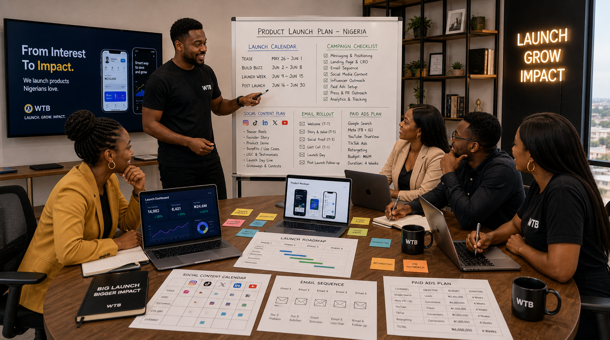

Offer and launch story clarity
We help your business shape what the product is, why it matters, and why the audience should pay attention now.
Product launch marketing
A launch can create attention and still miss impact. What matters is not only whether people see the product, but whether they understand it, remember it, trust it, and take the next step. WTB helps your business launch with more sequence, more clarity, and better post-launch traction.
A product launch marketing agency should help your business build the message, the launch sequence, the channel mix, and the follow-up support that turns launch attention into meaningful traction.
Launches need structure
Your business may already have the product ready, the team motivated, and the date circled. But if the audience does not receive the right message at the right time through the right path, even a good launch can feel flatter than it should.
WTB helps your business shape pre-launch curiosity, launch-week momentum, and post-launch follow-up through landing pages, content rollout, creator support, paid traffic, search visibility, and conversion-focused messaging.
If your product is app-led, also review How to Market an App in Nigeria and App Marketing Agency Nigeria.

What we handle
The strongest launches feel intentional before launch day and useful after it.
We help your business shape what the product is, why it matters, and why the audience should pay attention now.
Content timing, offer pacing, audience warming, and a launch structure that supports more than a one-day spike.
Launch pages, signup pages, waitlist pages, and conversion paths that reduce friction for interested buyers.
Search, social, creator support, paid ads, email, WhatsApp, and community distribution shaped to fit the product stage.
We help your business support launch visibility with better targeting, better creative direction, and stronger campaign alignment.
Because the real work often starts after the audience says, “Interesting.”
Best fit
This page is for startups, new apps, product teams, consumer product brands, digital service launches, software rollouts, and businesses introducing new offers into Nigeria that need a more deliberate launch path.
If your business also needs startup growth support, visit Growth Marketing for Startups Nigeria. If the challenge is post-signup drop-off, use Onboarding Funnel Optimization Nigeria.

Quick answers
It should help with offer messaging, launch sequencing, landing pages, campaign rollout, audience targeting, creator support, paid testing, and post-launch traction.
Because the message may be weak, the audience fit may be unclear, the campaign sequence may be rushed, or the post-launch support may not be strong enough to sustain attention.
This page is for startups, new apps, software launches, consumer products, service businesses, and teams introducing new offers into the Nigerian market.
Preparing a launch?
We can help your team build the right sequence, sharpen the message, and create a launch path that still feels alive after day one.